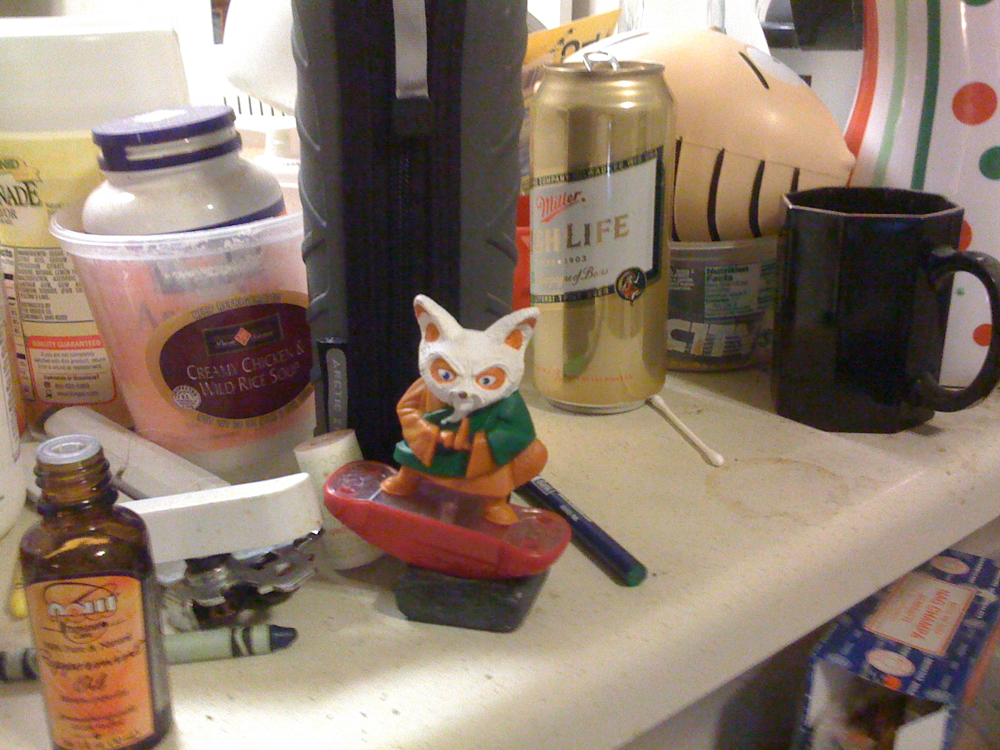

|
"It's all just a-cooked right in to that big lasagna in the sky..."
As in like, "Hey! Can you all hear me over there at
all? No, not at all?
Am I hollering loud enough to where you can hear me?" |
|||||
|
These Here Disclaimers
Disclaimer: Being a moderate doesn't mean I don't have an opinion. I've got plenty, OHHHHHHHHHH!!!! Disclaimer: This idea will never, ever work. Probably. I mean, c'mon, it would be a travesty! Disclaimer: I mean, there should be something, though, am I wrong? Disclaimer: We do our best. We have kids and day jobs. Please "bless this mess." |
|
||||
|
"Better Politics Eventually" Or um, "Everyone is just, is just mis-pronouncing it." Or um, "We should thank our lucky stars we have people of all stripes." Rock flag and eagle! Or um, "Here's something I think, but yesterday, I walked into a glass door..." Or, "There's always two sides to everything. But, 'gravity is down.' " Or like, "I need a second chance to get your ear on this one." Or like, "Is an apple better than a pear? At what?" Or um, "Every-body's work-ing for the week-end !" Or like Sim City 2000? You build the roads, you build the water pipes...  |
||||
Really Super Serious Key Points:
 Mission Statement Type of Thingy "This is America; we have people of all stripes." So, Buy Some Merch, Ya Derch! :D
|
|||||